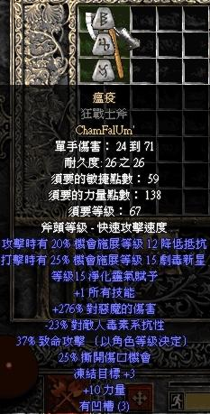
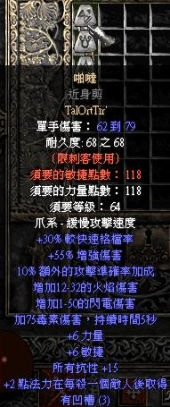
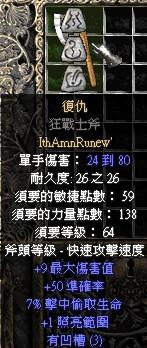
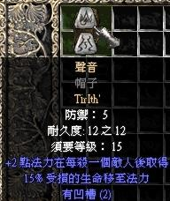

符文組編號
順便附上已解析出的4樣隱藏符文組
瘟疫:任何3S武器 啪噠:3S爪 復仇:任何3S武器 聲音:2s頭盔
(復仇與聲音似乎還沒鍵入功能 只有空架子)
還有1個編號167的"驚奇"條件卻是4.12.24的3s"死靈法杖"
因此...無解...
此為未開放符文組 請千萬不要去嘗試 只是將他解析出來而已

001: 古代人的契約
002: 毀天滅地(未開放)
003: 權威(未開放)
004: 野獸
005: 美貌(未開放)
006: 黑色
007: 血腥(未開放)
008: 白骨
009: 野薔薇
010: 品牌
011: 死亡呼吸
012: 破碎的誓言(未開放)
013: 戰爭招喚
014: 榮耀之鍊
015: 機會(未開放)
016: 渾沌
017: 新月
018: 黑暗(未開放)
019: 白天(未開放)
020: 死神
021: 欺瞞(未開放)
022: 迪勒瑞姆
023: 渴望(未開放)
024: 失望(未開放)
025: 毀滅
026: 末日
027: 飛龍
028: 恐懼(未開放)
029: 夢境
030: 強制
031: 邊緣
032: 興高彩烈(未開放)
033: 謎團
034: 教化
035: 羨慕(未開放)
036: 永恆
037: 流亡
038: 信心
039: 飢荒
040: 火焰(未開放)
041: 剛毅
042: 幸運(未開放)
043: 友情(未開放)
044: 狂怒
045: 幽暗
046: 榮譽(未開放)
047: 悔恨
048: 正義之手
049: 合諧
050: 憎恨
051: 橡樹之心
052: 天堂的意識(未開放)
053: 神聖之淚(未開放)
054: 神聖雷擊
055: 榮耀
056: 復仇(未開放)
057: 恭謙(未開放)
058: 飢餓(未開放)
059: 冰凍
060: 無限
061: 純潔(未開放)
062: 眼光
063: 忌妒(未開放)
064: 審判(未開放)
065: 王者的慈悲
066: 弒王者
067: 騎士的警戒(未開放)
068: 知識(未開放)
069: 最後希望
070: 法律(未開放)
071: 執法者
072: 葉子
073: 閃電(未開放)
074: 獅子心
075: 知識
076: 愛情(未開放)
077: 忠誠(未開放)
078: 慾望(未開放)
079: 瘋狂(未開放)
080: 一股邪惡力量(未開放)
081: 怨恨
082: 旋律
083: 記憶
084: 迷霧(未開放)
085: 早晨(未開放)
086: 神秘(未開放)
087: 神話
088: 天底
089: 天然的王國(未開放)
090: 夜晚(未開放)
091: 誓約
092: 遵從
093: 湮沒(未開放)
094: 著魔(未開放)
095: 熱情
096: 忍耐(未開放)
097: 啪噠(未開放)
098: 和平
099: 思考之聲
100: 懺悔(未開放)
101: 危害(未開放)
102: 疫病(未開放)
103: 鳳凰
104: 虔誠(未開放)
105: 信念之柱(未開放)
106: 瘟疫(未開放)
107: 頌揚(未開放)
108: 祈禱(未開放)
109: 驕傲
110: 原理
111: 戰鬥中的勇氣(未開放)
112: 謹重
113: 懲罰(未開放)
114: 純潔(未開放)
115: 疑問(未開放)
116: 光輝
117: 降雨
118: 理由(未開放)
119: 鮮紅(未開放)
120: 押韻
121: 裂縫
122: 聖堂
123: 奇遇(未開放)
124: 影子(未開放)
125: 懷疑之影(未開放)
126: 寂靜
127: 賽連之歌(未開放)
128: 煙霧
129: 哀傷(未開放)
130: 精神
131: 燦爛
132: 星光(未開放)
133: 隱密
134: 鋼鐵
135: 寂靜之水(未開放)
136: 刺傷(未開放)
137: 石塊
138: 風暴(未開放)
139: 力量
140: 暴風雨(未開放)
141: 誘惑(未開放)
142: 恐怖(未開放)
143: 飢餓(未開放)
144: 思維(未開放)
145: 雷電(未開放)
146: 時間(未開放)
147: 傳統(未開放)
148: 背信
149: 信任(未開放)
150: 真實(未開放)
151: 堅定意志(未開放)
152: 英勇(未開放)
153: 復仇(未開放)
154: 毒牙
155: 勝利(未開放)
156: 聲音(未開放)
157: 虛無之(未開放)
158: 戰爭(未開放)
159: 清水(未開放)
160: 財富
161: 低語(未開放)
162: 白色
163: 輕風
164: 希望之翼(未開放)
165: 智慧(未開放)
166: 悲痛(未開放)
167: 驚奇(未開放)
168: 憤怒
169: 年輕(未開放)
170: 和風